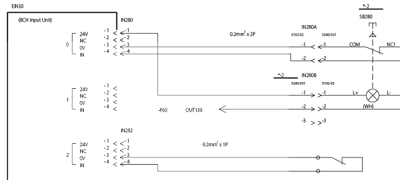
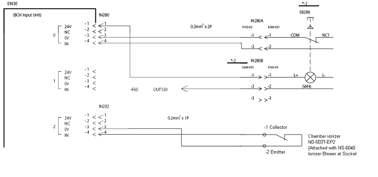

Service History
Subject: Wrong wiring of ND-503T-EP2
Handler Model: NS-8040(EEMS, S/N: 181589, 181590)
Controller: RC520
Date: 13 Aug 2008
Symptom
During buy-off in EEMS, chamber ionizer controller ND-503T-EP2 was switch off and no alarm trigger.
Chamber ionizer ND-503T-EP2 external output was connected to remote I/O module but pin 3 and pin 4 was connected wrongly.
Both systems 181589 and 181590 was wired wrongly.
Wrong wiring for IN282 chamber ionizer
Change collector wire to pin4 and emitter wire to pin3.
Simulate chamber ionizer turn off and verified chamber ionizer cleaning warning W0392 and W0394 – ok.
|
 Wrong wiring |
|
 Correct wiring |
Action
Cause